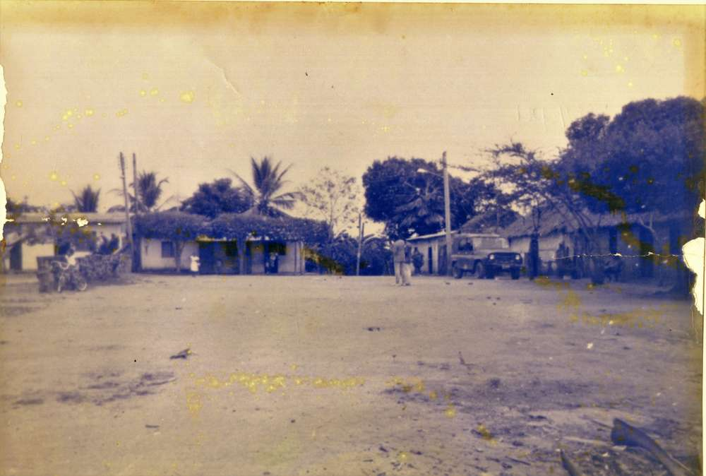

Origen y Trayectoria

Desde sus raíces como caserío Valparaíso en 1907, hasta su establecimiento como municipio en 1957, Pueblo Nuevo ha sido símbolo de esfuerzo colectivo, adaptación y resiliencia.
Su historia se entrelaza con las luchas campesinas, el auge ganadero y el fortalecimiento comunitario, creando un legado de perseverancia y tradición que perdura hasta nuestros días.
1907
Caserío Valparaíso
Primeros asentamientos que darían origen a lo que hoy conocemos como Pueblo Nuevo.
1930s
Crecimiento Comunitario
Expansión de la comunidad y desarrollo de las primeras estructuras sociales y económicas.
1957
Establecimiento Municipal
Pueblo Nuevo es oficialmente reconocido como municipio independiente.
1970s
Auge Ganadero
Fortalecimiento de la economía local a través de la ganadería y agricultura.
2000s
Modernización
Desarrollo de infraestructura moderna y servicios públicos de calidad.